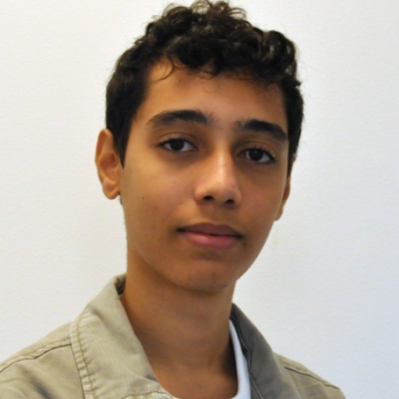
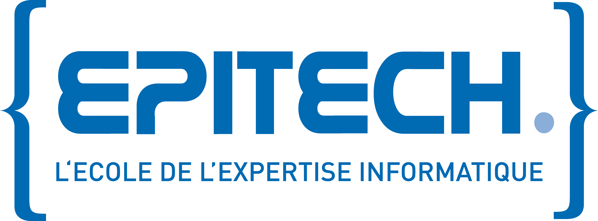

// about me
Bonjour, je suis
Bonjour, je suis
Hatim Ouaadi
Actuellement étudiant à Epitech Marseille, je me passionne pour le développement logiciel et les nouvelles technologies. Mes études m'ont permis d'acquérir des compétences solides en programmation, conception d'applications et résolution de problèmes complexes.
Je suis AER à Epitech, une distinction qui reflète mon niveau avancé et mon engagement dans le développement logiciel. Être AER m'a permis de renforcer mon esprit d'entraide, en accompagnant mes camarades sur des projets collectifs. Ces expériences ont affiné ma rigueur, mon autonomie et ma créativité.
Parcours
2024 – 2029
Epitech — Expert en Technologies de l'Information
Formation en 5 ans axée sur la pédagogie par projet. Apprentissage des langages
systèmes, du web, du gamedev et du management de projet.
2025 – 2026
Stage — Linxo (6 mois)
Stage en entreprise au sein de Linxo, enrichissant mon expérience professionnelle
dans un environnement de développement logiciel réel.
2026 →
AER — Assistant Pédagogique
Distinction interne à Epitech, témoignant de ma capacité à mener des projets
ambitieux et à accompagner mes camarades.
Compétences
Python
C
C++
JavaScript
HTML / CSS
Shell
Makefile
Git / GitHub
Ncurses
Raycasting

